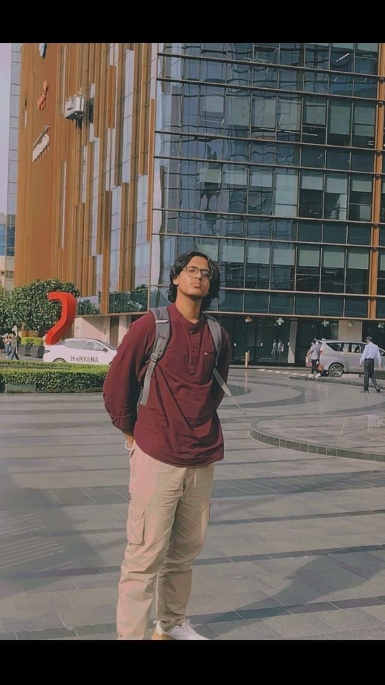

Hey! I’m Aditya, a full-stack developer at Geek Room, passionate about building scalable web applications and solving real-world problems through efficient, maintainable code.
I specialize in HTML, CSS, JavaScript, and Node.js, with active expertise in React.js, MongoDB, and SQL. I have been refining my skills in the MERN stack since October 2024, constantly improving my ability to develop seamless frontend experiences and optimize backend performance.
Beyond development, I have a strong background in UI/UX design, ensuring that my projects are not only functional but also visually engaging. My 4-5 years of experience in video editing has sharpened my ability to create high-quality digital content, blending creativity with technical precision.
I thrive on problem-solving, whether it’s debugging complex backend logic, optimizing frontend performance, or even solving 10-12 different types of Rubik’s cubes—a skill that has strengthened my logical thinking and algorithmic approach.
Apart from tech, music has been an integral part of my life for the past 7 years. My experience in Scottish Band and Western Music has instilled in me discipline, creativity, and teamwork, qualities that reflect in my work as well.
I‚Äôm always eager to explore new technologies, take on challenging projects, and push boundaries in development. Let‚Äôs connect and build something impactful! üöÄ

EDUCATION
Kamal Model Sr Sec School 2008-2024
Maharaja Surajmal Institute of technology 2024-2028üßÆ üíØ
Languages:
English üé∂
Hindiüéâ
N3 Level Japaneese üé∏
üé§
Achievements in Co-Curricular Activites:
6-Times Zonal competition winner Scottish Band
5-Times Inter-Zonal competition winner Scottish Band
2-Times Districh level runner up Scottish Band
4-Times Zonal competition winner Western Music
4-Times Inter-Zonal competition winner Western Music
PERFORMED 2 TIMES IN NATIONALS OF SCOTTISH BAND
आदि MEANS
वर्सेटिलिटी
GEEK ROOM MSIT
I’m Aditya, a full-stack developer at Geek Room, where I build scalable and efficient web applications.
Since October 2024, I’ve been working with the MERN stack, refining my expertise in MongoDB, Express.js, React.js, and Node.js to develop powerful backend solutions and dynamic user interfaces.
I focus on clean, maintainable code, designing optimized databases, and developing high-performance APIs. Constantly evolving, I stay updated with the latest tech trends to build efficient, innovative, and user-centric applications.
Contributor
I’m a contributor in the Girls' Summer Script of Code, where I collaborate on open-source projects and contribute to real-world coding challenges.
Through this experience, I’ve enhanced my skills in collaborative development, code optimization, and problem-solving, while actively engaging with a community of developers to build impactful solutions.
Editor
I have 4-5 years of experience in video editing, specializing in post-production, motion graphics, and color grading. My skills in sound design and smooth transitions help create polished, professional visuals. With a strong foundation in web design, I ensure seamless and visually cohesive content. üöÄüé¨